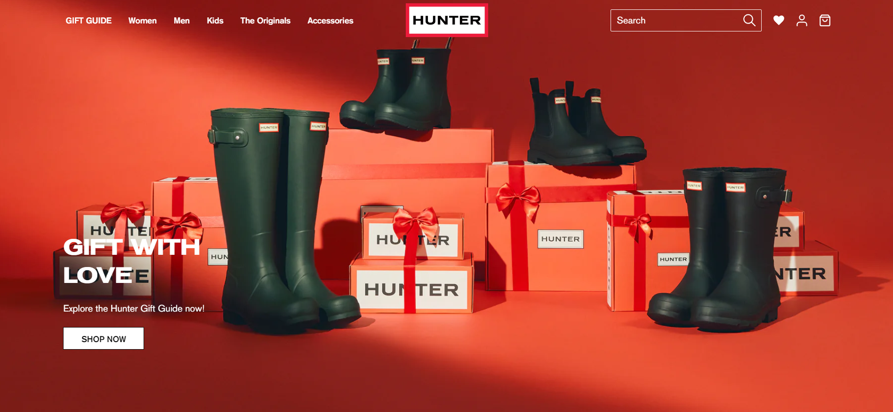
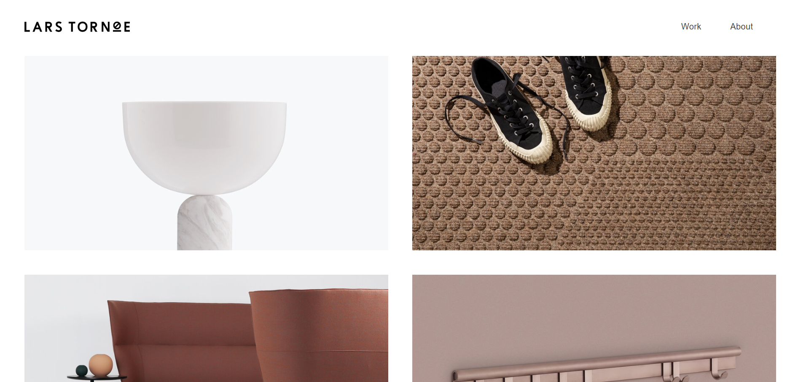

1.First work I did at E.F.A El campico

2.My work for a Boot Shop. Check it out!

3.Lars Tornoe work. An incredible men!
1.First work I did at E.F.A El campico
2.My work for a Boot Shop. Check it out!
3.Lars Tornoe work. An incredible men!
As a Victor Pauchet said The most productive work is the one that comes out of the hands of a happy man.